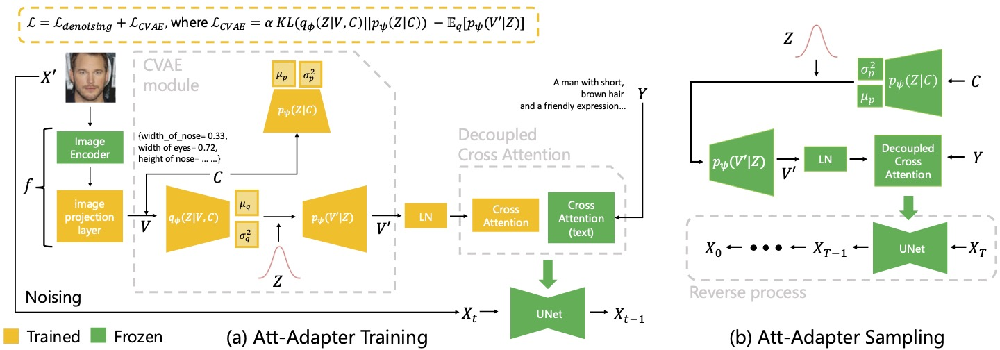
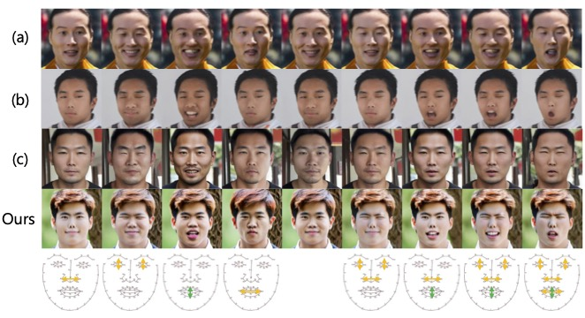
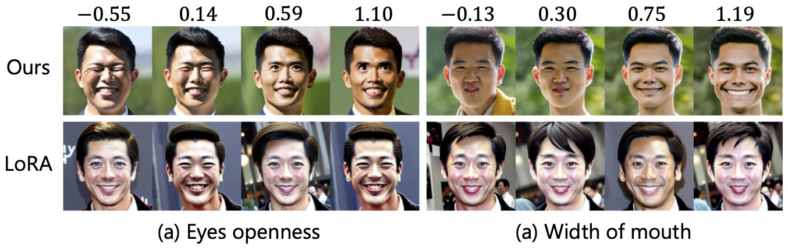
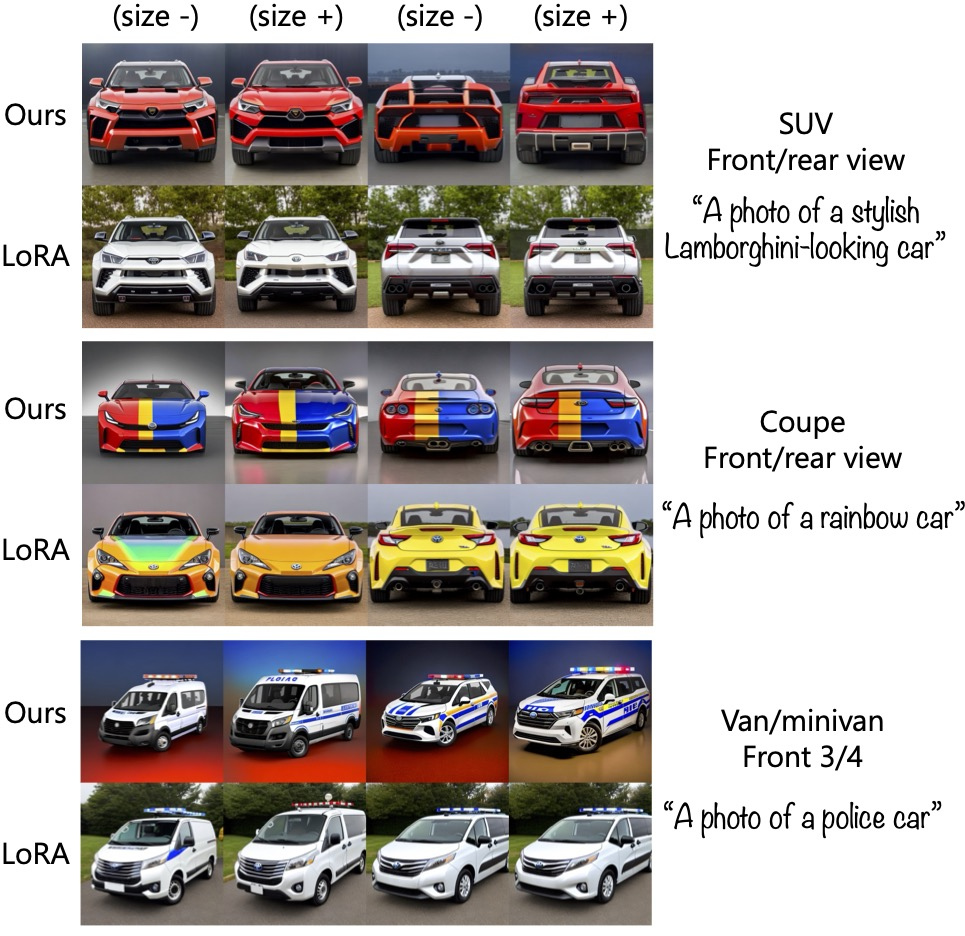
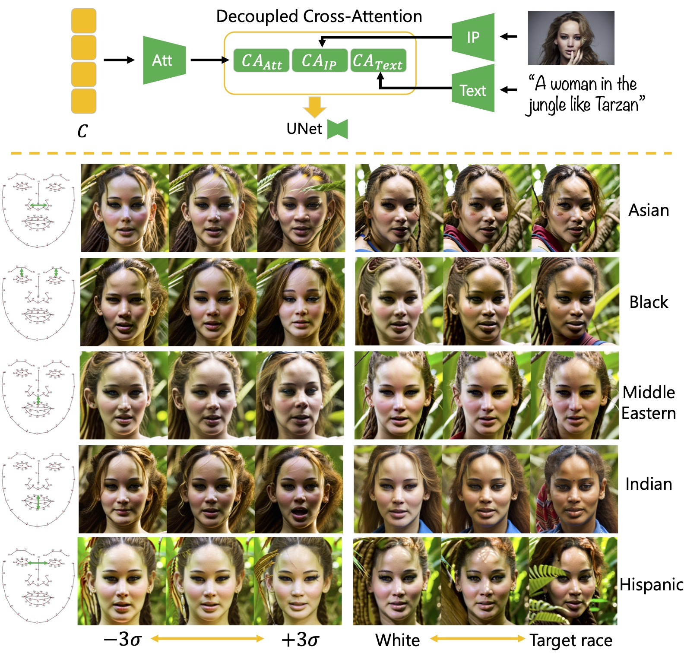
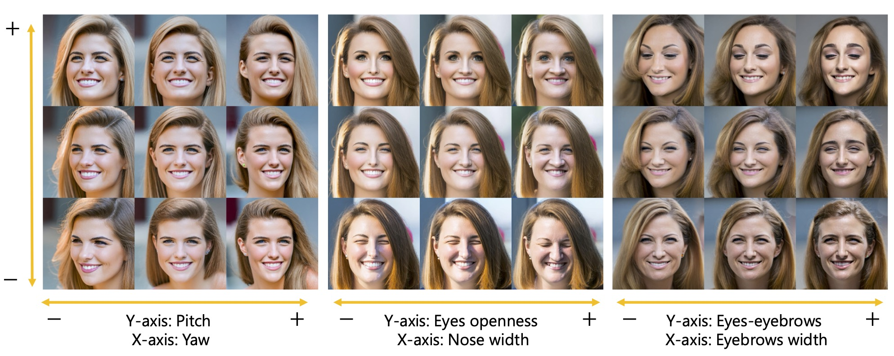

Att-Adapter: A Robust and Precise Domain-Specific Multi-Attributes T2I Diffusion Adapter via Conditional Variational Autoencoder
Wonwoong Cho1,
Yan-ying Chen2,
Matt Klenk2,
David Inouye1,
Yanxia Zhang2
1Purdue University
2Toyota Research Institute
[Paper]
[Code]
[BibTeX]
[Pretrained Models]
Abstract
While text-to-image (T2I) diffusion models can generate high-quality images from text prompts, they struggle to provide precise, continuous control over specific visual attributes (e.g., nose width, eye openness), especially in new domains. Existing methods often require paired data, handle only discrete attributes, or depend on pretrained GANs.
We introduce Att-Adapter, a plug-and-play module for pretrained diffusion models that enables robust, fine-grained, multi-attribute control from unpaired data. By leveraging a decoupled cross-attention module and a Conditional Variational Autoencoder (CVAE), Att-Adapter harmonizes multiple domain attributes with text and mitigates overfitting. Our approach supports continuous and indescribable attribute manipulation, requires no paired synthetic data, and scales to many attributes in a single model.

Att-Adapter enables continuous control (e.g., 0 to 1) over subtle visual details like nose width or eye openness, which are difficult to capture with discrete text-based conditioning.
Approach and Context
Large pretrained text-to-image (T2I) diffusion models have achieved impressive results in generating realistic images from text prompts. However, providing users with precise, fine-grained control over multiple, continuous, or indescribable visual attributes—such as nose width or eye openness—remains a significant challenge, especially in new domains. Existing approaches often rely on text-based conditioning, which is inherently limited for subtle or continuous attributes, or require paired data and pretrained GANs, restricting their flexibility and applicability.
Recent methods have attempted to address these limitations, but many either struggle with indescribable attributes, depend on synthetic paired data, or require training separate models for each attribute. For example, approaches based on CLIP embeddings or StyleGAN latent spaces are limited by their reliance on text or GAN quality, while LoRA-based controllers often need paired data and lack scalability to multi-attribute control.
Att-Adapter overcomes these challenges by introducing a plug-and-play module for pretrained diffusion models that enables robust, fine-grained, and multi-attribute control from unpaired real data. Our approach leverages a decoupled cross-attention module to harmonize multiple domain attributes with text conditioning, and incorporates a Conditional Variational Autoencoder (CVAE) to mitigate overfitting and model the diversity of real-world attributes. This design allows Att-Adapter to support both continuous and discrete attribute spaces, handle indescribable attributes, and scale to many attributes within a single model—without requiring paired synthetic data or separate models for each attribute.

Overview of the Att-Adapter approach for attribute control in diffusion models.
Results
We evaluate Att-Adapter on two public datasets (FFHQ for faces and EVOX for cars), comparing against strong baselines for both continuous and discrete attribute control. Our experiments cover both latent and absolute attribute control settings, and we report both quantitative and qualitative results.
Latent Control: Att-Adapter outperforms baselines such as ConceptSlider [a], W+ Adapter [b], and S-I-GANs [c] in both control range (CR) and disentanglement (DIS) for single and multiple attribute settings. Our method achieves higher expressivity and better disentanglement, as shown in the table below and the qualitative comparison.

Comparison of continuous attribute control with baselines. Att-Adapter achieves stronger target attribute effects and better disentanglement.
Absolute Control: In the absolute control setting, Att-Adapter demonstrates superior performance compared to LoRA and ITI-GEN, especially in controlling fine-grained facial attributes and extrapolating beyond the training range. Our method maintains high visual fidelity and better alignment with target attributes.

Extrapolation to unseen attribute ranges. Att-Adapter can generalize beyond the training domain, unlike token-based baselines.
Generalization to New Domains: On the EVOX car dataset, Att-Adapter provides robust control over both discrete (e.g., pose, body type) and continuous (e.g., car size) attributes, outperforming LoRA in continuous attribute manipulation and maintaining pretrained knowledge.

Comparison of attribute control on the EVOX car dataset. Att-Adapter achieves better control over continuous attributes and maintains prompt fidelity.
Compositionality and Adapter Fusion: Att-Adapter can be combined with other adapters, such as IP-Adapter, to enable image-based conditioning alongside attribute control. This demonstrates the flexibility and compositionality of our approach.

Combining Att-Adapter with IP-Adapter enables both image and attribute-based conditioning in pretrained diffusion models.
Multi-Attribute Control: Att-Adapter enables simultaneous and precise control over multiple visual attributes, demonstrating robust disentanglement and flexibility. The example below shows how Att-Adapter can manipulate several attributes at once, maintaining high image quality and attribute fidelity.

Att-Adapter supports fine-grained, multi-attribute control, allowing for complex and realistic edits across several attributes simultaneously.
Conclusion
Att-Adapter enables fine-grained, multi-attribute control in diffusion models, outperforming existing baselines and supporting both continuous and discrete domains. Our approach opens new possibilities for controllable image synthesis.
Acknowledgements
We thank all collaborators and contributors to this project. For more details, please see our paper.
References
[a] Gandikota, V., et al. "ConceptSlider: Text-Guided Editing of Indescribable Attributes." CVPR 2024.
[b] Li, Y., et al. "StyleGAN-based $W_+$ Adapter for Attribute Control." CVPR 2024.
[c] Shen, Y., et al. "InterFaceGAN: Interpreting the Disentangled Face Representation Learned by GANs." CVPR 2020.
BibTeX
@inproceedings{attadapter2025,
title={Att-Adapter: A Robust and Precise Domain-Specific Multi-Attributes T2I Diffusion Adapter via Conditional Variational Autoencoder},
author={Wonwoong Cho and Yan-ying Chen and Matt Klenk and David Inouye and Yanxia Zhang},
booktitle={Proceedings of the IEEE/CVF International Conference on Computer Vision (ICCV)},
year={2025},
note={To appear}
}